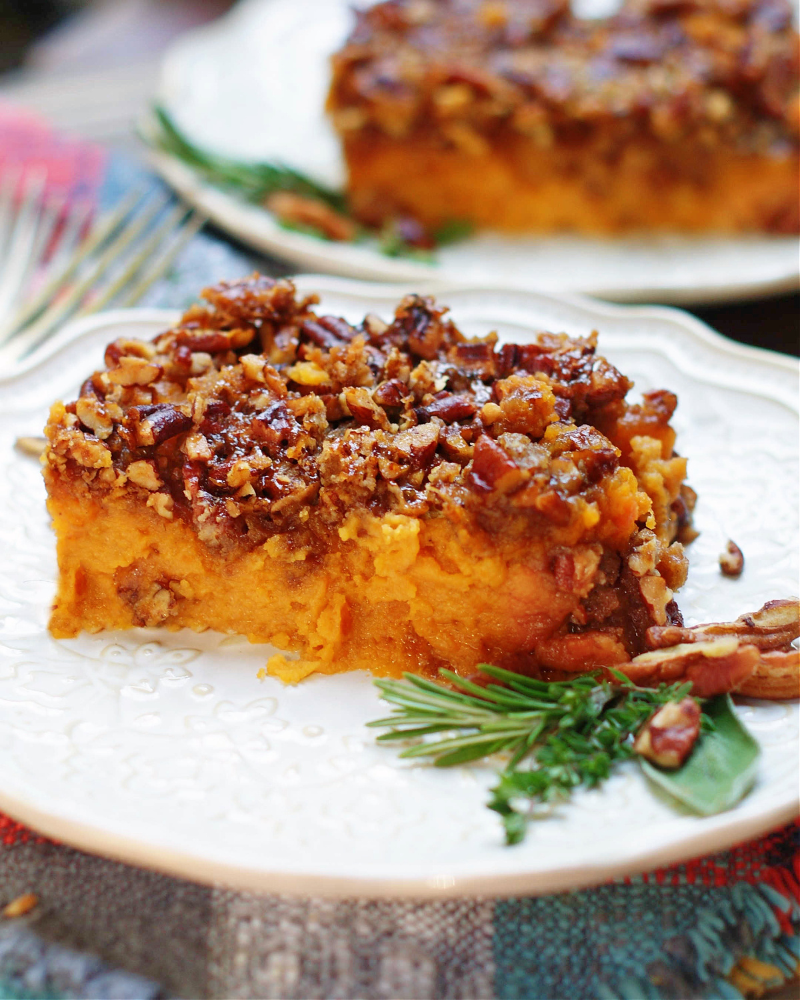

Sweet Potato Pecan Casserole
Description
The very best fall and winter staple.
Ingredients
Casserole
- 3 1/2 pounds sweet potatoes (about 5 medium), peeled and cut into 1-inch chunks
- 1/3 cup honey
- 1 large egg
- 1/4 teaspoon salt
Topping
- 5 tablespoons unsalted butter, melted
- 1/2 cup light brown sugar, packed
- 1/3 cup all-purpose flour
- 1/4 teaspoon salt, or to taste
- 1 cup pecans, chopped
- 1 cup walnuts, chopped
Steps
Make the Casserole
- To a large stockpot, add the sweet potato chunks, cover with water, and bring to a boil. Cook over high heat until sweet potatoes are fork tender. Drain well and transfer to a large bowl.
- Preheat oven to 350F and lightly spray a 2.5 to 3-quart baking dish or a 9×13-inch baking pan with cooking spray; set aside.
- To a large bowl with the sweet potatoes, add the egg, honey, salt, and mix.
- Turn out into baking dish, smoothing the top lightly with a spatula; set aside.
Make the Topping
- To a large microwave-safe bowl, add the butter and melt, about 1 minute.
- Add the brown sugar, flour, salt, and toss with a fork or your fingers until moist crumbs form.
- Add the pecans and toss to incorporate.
- Evenly turn topping out over filling.
- Bake the sweet potato casserole for about 45 minutes (or cover and refrigerate for up to 24 hours if you’re prepping it in advance), or until top is lightly golden browned, set on the edges, and mostly set in the center. Baking time will vary based on pan used (glass or ceramic baking dishes will bake for longer than metal pans), oven, climate, ingredient variances, etc. Start checking at 30 minutes.